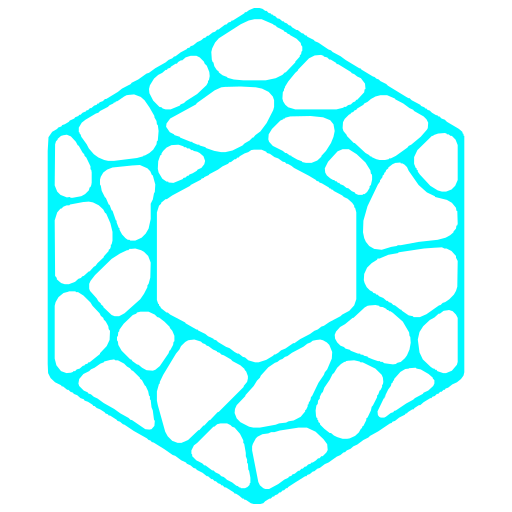

END-TO-END ENCRYPTED
Password — unlocks the secrets on this device
Relay address
Relay-id
Folder where this device keeps its encrypted vault. Point it anywhere — the choice is remembered across restarts.
A DECENTRALIZED, ENCRYPTED MESSENGER
No phone number. No central server. Your identity is a key only you hold — recoverable from a 24-word phrase.
Folder where this device keeps its encrypted vault. Point it anywhere — the choice is remembered across restarts.
Write these 24 words down, in order. They are the only way to recover this account.
Prove you saved the phrase, then set a device password.
Word #5
Word #13
Word #21
Device password — encrypts secrets on this disk
Where your messages travel. Your relay prints all of these when it starts.
Relay address
Relay-id
Relay invite (private relays only)
Enter your 24-word recovery phrase into an empty profile.
Recovery phrase
New device password
Posts from accounts you follow — subscribe to see someone, publish to reach your subscribers.
Your identity, network and appearance.
Display name — your contacts see this
Bio
Photos — your contacts see these on your profile
Up to 6 photos, sent to your confirmed contacts. Like your avatar, a photo you add now is not backfilled to contacts you add later.
Label (only you see it)
A relay can still link your channels by fetch timing unless each rides its own circuit. One channel per contact is the most unlinkable.
Primary relay address
Relay-id
Route via SOCKS5 — Tor / obfs4 / i2p bridge (optional)
A .onion or .i2p relay needs its bridge here — Tor: 127.0.0.1:9050, i2pd: 127.0.0.1:4447. Traffic then stays inside that network.
Adds timing / traffic-analysis resistance on top. Point SOCKS5 at nym-socks5-client (127.0.0.1:1080).
Backup relays (multi-homing)
You still receive through these if your primary is blocked. Sending and publishing stay on the primary.
Relay invite — only for private (invite-only) relays
Paste the invite.json the relay operator gave you. A fresh account can publish anywhere but can only send through a private relay once its invite is imported.